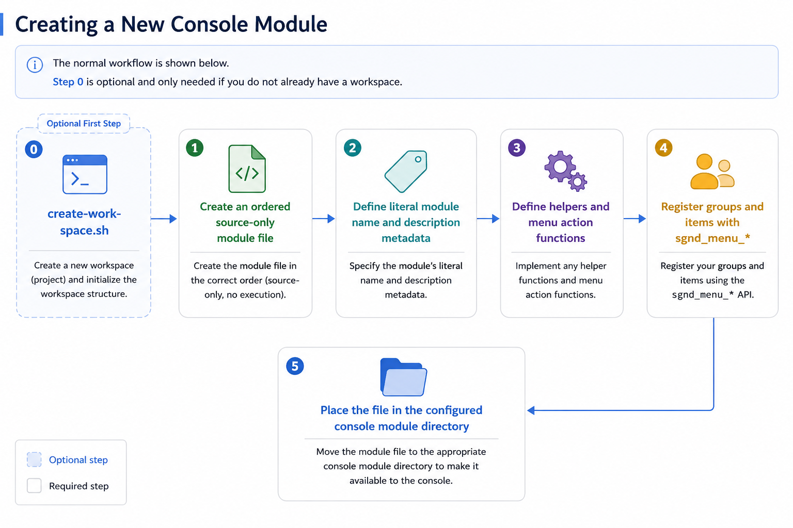

SolidGroundUX Documentation
Creating a New Console Module

No change to sgnd-console is required for a normal new page. On the next start the module appears in the index and is loaded only if selected.

No change to sgnd-console is required for a normal new page. On the next start the module appears in the index and is loaded only if selected.